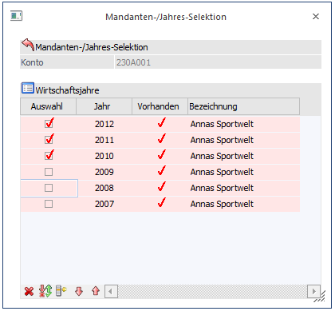
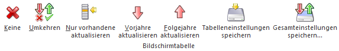
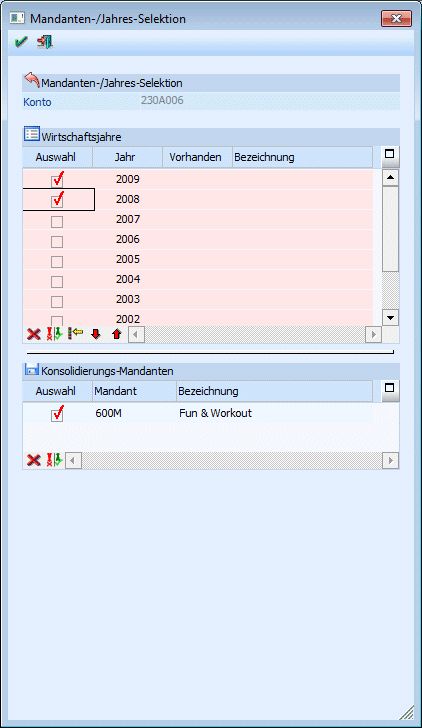
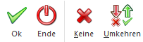

Das Fenster "Mandanten-/Jahres-Selektion" öffnet sich beim Speichern von neuangelegten oder geänderten Konten, wenn in den FIBU-Parameter (WinLine START - Parameter - Applikations-Parameter) die Option "Manuelle Auswahl" eingestellt ist.

Ø Konto
Anzeige der Kontonummer, die gerade gespeichert wurde
Ø Wirtschaftsjahre
Im Bereich "Wirtschaftsjahre" können nun die Wirtschaftsjahre ausgewählt werden, auf die die Änderungen übernommen werden sollen. In der Tabelle werden die vorhandenen Wirtschaftsjahre des Mandanten angezeigt, wobei in der Spalte "Vorhanden" angezeigt wird, ob das entsprechende Konto in diesem WJ bereits angelegt war - in der Spalte Bezeichnung wird dann der Kontenname angezeigt, unter dem das Konto angelegt ist.
Ist die Checkbox "Auswahl" aktiviert, werden die Änderungen bzw. Neuanlagen in das entsprechende Wirtschaftsjahr kopiert.
Tabellenbuttons

Ø Keine
Mit diesem Button würde in kein Wirtschaftsjahr eine Änderung übernommen werden.
Ø Umkehren
Durch Anklicken des Umkehr-Buttons wird die Selektion ins Gegenteil verkehrt: alle aktiven Checkboxen werden inaktiv gesetzt und alle inaktiven Checkboxen werden aktiv gesetzt.
Ø Nur vorhandene aktualisieren
Wenn dieser Button angeklickt wird, dann werden nur die Wirtschaftsjahre aktualisiert, in denen das Konto bereits vorhanden ist.
Ø Vorjahre aktualisieren
Wenn dieser Button angeklickt wird, dann werden nur die Wirtschaftsjahre ausgewählt, die vor dem aktuellen Wirtschaftsjahr liegen - die Änderung wird nicht in nachfolgende Wirtschaftsjahre übernommen.
Ø Folgejahre aktualisieren
Wenn dieser Button angeklickt wird, dann werden nur die nachfolgenden Wirtschaftsjahre ausgewählt.
Wird auch die Konzernkonsolidierung verwendet, wird das Fenster "Mandanten-/Jahres-Selektion" erweitert, aber auch nur dann, wenn in den Konsolidierungseinstellungen die Optionen "Manuelle Mandanten-Selektion bei Neuanlage" und "Manuelle Übernahme in den Submandanten" ausgewählt sind.
Ø Tabelleneinstellungen speichern
Die Spalten einer Tabelle können grundsätzlich an beliebige Positionen verschoben, bzw. in der Breite entsprechend angepasst werden. Durch Anwahl des Buttons "Tabelleneinstellungen speichern" werden die Einstellungen benutzerspezifisch gespeichert und bei dem nächsten Aufruf des Programmpunktes wieder vorgeschlagen.
Ø Gesamteinstellungen speichern
Im Gegensatz zu "Tabelleneinstellungen speichern" können mit "Gesamteinstellungen speichern" mehrere Tabellenaufbauten gespeichert und nach Wunsch geladen werden. Zusätzlich werden Sonderfunktionen der Tabelle (z.B. "Spalte gruppieren") ebenfalls bei der Speicherung bedacht.

Im unteren Bereich des Fensters kann bei einer Neuanlage oder einer Änderung des Kontos, die gewünschten Submandanten manuell ausgewählt werden. Die Konten werden nach den oberen Einstellungen in den Konsolidierungs-Mandanten "kopiert".
Tabellenbuttons

Ø Keine
Mit diesem Button würde in kein Wirtschaftsjahr eine Änderung übernommen werden.
Ø Umkehren
Durch Anklicken des Umkehr-Buttons wird die Selektion ins Gegenteil verkehrt: alle aktiven Checkboxen werden inaktiv gesetzt und alle inaktiven Checkboxen werden aktiv gesetzt.
Ø OK
Durch Anklicken des OK-Buttons bzw. durch Drücken der F5-Taste werden alle Änderungen auf die ausgewählten Wirtschaftsjahre verteilt.
Ø Ende
Durch Drücken des Ende - Buttons oder der ESC-Taste wird das Fenster geschlossen.